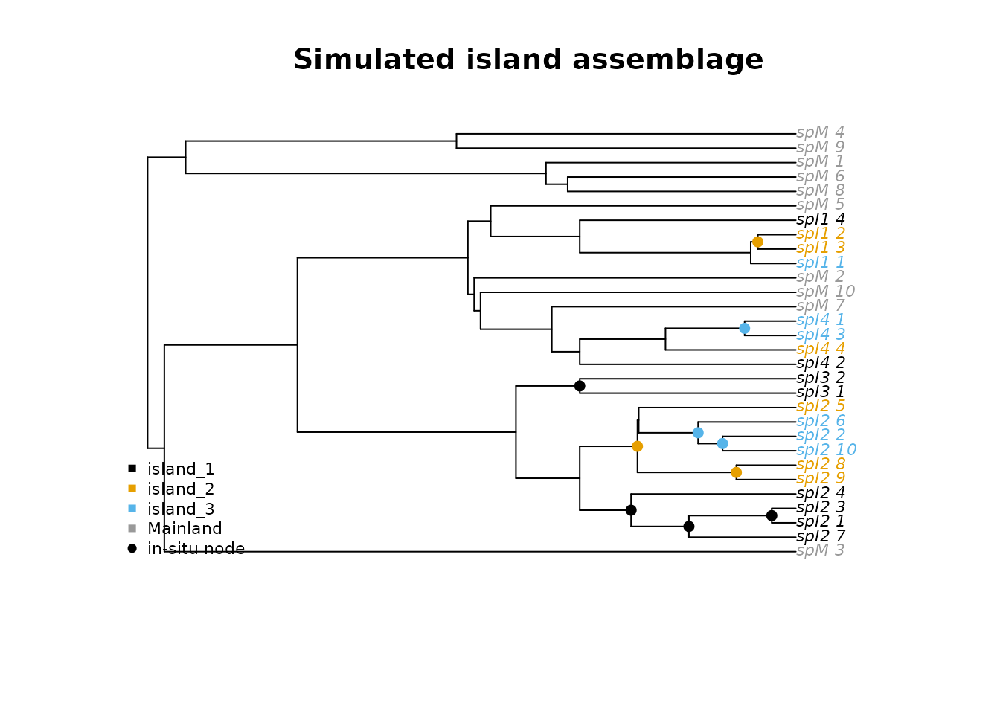

Simulating island radiations and testing pipeline performance
Simulations.RmdOverview
Before applying insitu to an empirical dataset, it helps to know what level of performance to expect given the properties of your system. This vignette shows how to simulate island radiations under known parameters, run the full pipeline on the simulated data, and calibrate your threshold and model choices for your own tree.
The key advantage of simulated data is that you know the ground truth. This is, every in-situ speciation event is recorded at the time of simulation, impliying that you can directly measure how often the pipeline recovers them. Running this under conditions that match your empirical system gives you a realistic F1 score to expect before you run anything on real data.
Simulating a single island radiation
simulate_island builds a mainland tree and one or more
island subtrees under separate birth-death processes, grafts them
together, and forces ultrametricity. The two colonization parameters
control distinct biological processes:
mainland_colonization_rate governs how many independent
mainland-to-island colonization events occur (low values give an
effectively monophyletic island clade, higher values allow polyphyletic
assemblages), while inter_island_rate controls dispersal
between islands within the system after the initial colonization. Net
diversification and extinction fraction can differ between the mainland
and island portions of the tree, reflecting the faster radiation
typically observed on islands.
library(insitu)
sim <- simulate_island(
n_tips = 30,
diversification_rate = 0.15,
extinction_fraction = 0.20,
diversification_rate_island = 1.00,
extinction_fraction_island = 0.20,
mainland_colonization_rate = 0.05,
inter_island_rate = 0.50,
n_islands = 3,
n_mainland = 10,
seed = 1
)
ape::Ntip(sim$phy)
#> [1] 30
head(sim$PAM[, 1:5])
#> locale spM_1 spM_2 spM_3 spM_4
#> 1 island_1 0 0 0 0
#> 2 island_2 0 0 0 0
#> 3 island_3 0 0 0 0
#> 4 Mainland 1 1 1 1
nrow(sim$true_events)
#> [1] 10true_events is the ground truth. Every row in this
object is a node the simulation placed as an in-situ speciation event,
with the island it occurred on.

Tips are colored by island, grey for mainland. Filled circles mark
the true in-situ nodes from true_events.
Running the pipeline on simulated data
Run the standard pipeline exactly as you would on real data. The only
difference is that you can compare the recovered events to
true_events afterwards.
recons <- run_geo_asr(phy = sim$phy, PAM = sim$PAM, model = "ER")
events <- map_insitu_events(
recons = recons,
phy = sim$phy,
PAM = sim$PAM,
threshold = 0.75
)
# Compare recovered to true using node + island pairs
true_pairs <- paste(sim$true_events$node, sim$true_events$island, sep = "_")
pipeline_pairs <- paste(events$node[events$in_situ == TRUE],
events$island[events$in_situ == TRUE], sep = "_")
tp <- length(intersect(pipeline_pairs, true_pairs))
sensitivity <- tp / max(1L, length(true_pairs))
precision <- tp / max(1L, length(pipeline_pairs))
f1 <- 2 * sensitivity * precision / (sensitivity + precision)
cat("Sensitivity:", round(sensitivity, 2), "\n")
#> Sensitivity: 0.9
cat("Precision: ", round(precision, 2), "\n")
#> Precision: 0.6
cat("F1: ", round(f1, 2), "\n")
#> F1: 0.72Power analysis across 100 replicates
A single replicate is not enough to characterize performance.
insitu_power runs the full simulation-and-pipeline cycle
repeatedly and returns sensitivity and precision for each replicate, so
you can compute F1 and summarize its distribution.
res <- insitu_power(
n_sim = 100,
n_tips = 30,
diversification_rate = 0.15,
extinction_fraction = 0.20,
diversification_rate_island = 1.00,
extinction_fraction_island = 0.20,
mainland_colonization_rate = 0.05,
inter_island_rate = 0.50,
n_islands = 3,
n_mainland = 10,
threshold = 0.75,
model = "ER"
)
f1 <- 2 * res$sensitivity * res$precision /
(res$sensitivity + res$precision)
cat("Mean F1:", round(mean(f1, na.rm = TRUE), 2), "\n")
cat("80% CI: ", round(quantile(f1, 0.10, na.rm = TRUE), 2), "-",
round(quantile(f1, 0.90, na.rm = TRUE), 2), "\n")Calibrating for your own system
The parameters in simulate_island map directly onto
things you can estimate for your own dataset.
n_tips and n_mainland come from your
phylogeny directly. For diversification_rate and
extinction_fraction, published estimates for your clade are
the best starting point. diversification_rate_island is
harder to estimate independently but the ratio of island to mainland
diversification is often available for well-studied systems.
n_islands is the number of distinct islands or island-like
units in your PAM. Set mainland_colonization_rate low
(0.01-0.05) when a single colonization origin is well established
phylogenetically and higher (0.1-0.5) when multiple independent
colonizations are likely.
Sweeping threshold is the most practical calibration
step because it is the one setting you control directly in
map_insitu_events:
thresholds <- c(0.5, 0.6, 0.75, 0.9)
power_by_threshold <- do.call(rbind, lapply(thresholds, function(thr) {
res <- insitu_power(
n_sim = 100,
n_tips = 30,
diversification_rate = 0.15,
extinction_fraction = 0.20,
diversification_rate_island = 1.00,
extinction_fraction_island = 0.20,
mainland_colonization_rate = 0.05,
inter_island_rate = 0.50,
n_islands = 3,
n_mainland = 10,
threshold = thr,
model = "ER"
)
f1 <- 2 * res$sensitivity * res$precision /
(res$sensitivity + res$precision)
data.frame(
threshold = thr,
f1_mean = mean(f1, na.rm = TRUE),
f1_lo = quantile(f1, 0.10, na.rm = TRUE),
f1_hi = quantile(f1, 0.90, na.rm = TRUE)
)
}))
print(power_by_threshold)
plot(power_by_threshold$threshold, power_by_threshold$f1_mean,
type = "b",
pch = 19,
ylim = c(0, 1),
xlab = "Threshold",
ylab = "F1 score",
main = "Expected pipeline performance for your system")
polygon(
c(power_by_threshold$threshold, rev(power_by_threshold$threshold)),
c(power_by_threshold$f1_lo, rev(power_by_threshold$f1_hi)),
col = adjustcolor("#0072B2", 0.2),
border = NA
)
abline(h = 0.8, lty = 2, col = "grey70")Use the threshold where F1 peaks or, if it does not reach 0.8, the
threshold that balances sensitivity and precision best for your
question. When F1 stays below 0.6 at all thresholds, your system’s
parameters (usually tree size or island-tip count) limit what the
pipeline can recover, and results should be treated as minimum bounds.
Reporting the uncertainty from simmap_insitu alongside
point estimates is especially important in that case.